Week 0 — Onboarding, Team Challenges & Personality Assessment
July 2026Kicked off ProtoSem onboarding at Forge, KCT Tech Park with team challenges, personality assessments, and historical technology research:
- The Chair Game: A simple concept requiring spatial problem-solving, patience, and team coordination to solve.
- The Marshmallow Challenge (with the Beta Team): A hands-on design and rapid prototyping game building a freestanding structure to support a marshmallow, highlighting team collaboration and iterative prototyping.
- Tech Innovation Research (PARC & Menlo Park): Introduced to two pivotal historical tech innovation terms — PARC (Palo Alto Research Center, birthplace of GUI, Ethernet, and modern computing) and Menlo Park (Edison's original invention lab and Silicon Valley tech hub) — exploring how legendary innovation hubs shape modern technology.
We also completed the official 16Personalities assessment, where my result came out as Commander (ENTJ) — reflecting a structured, strategic, and goal-oriented approach to leadership and problem-solving.
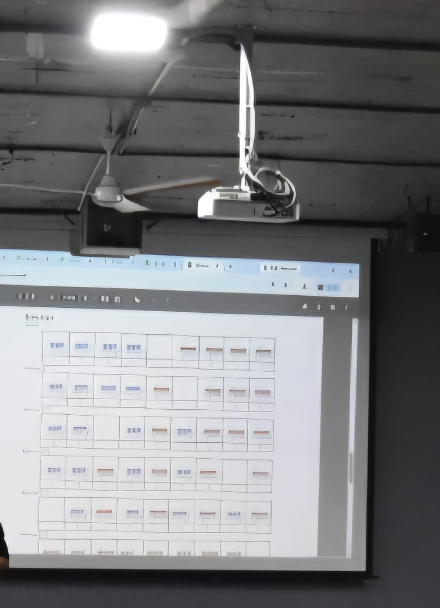
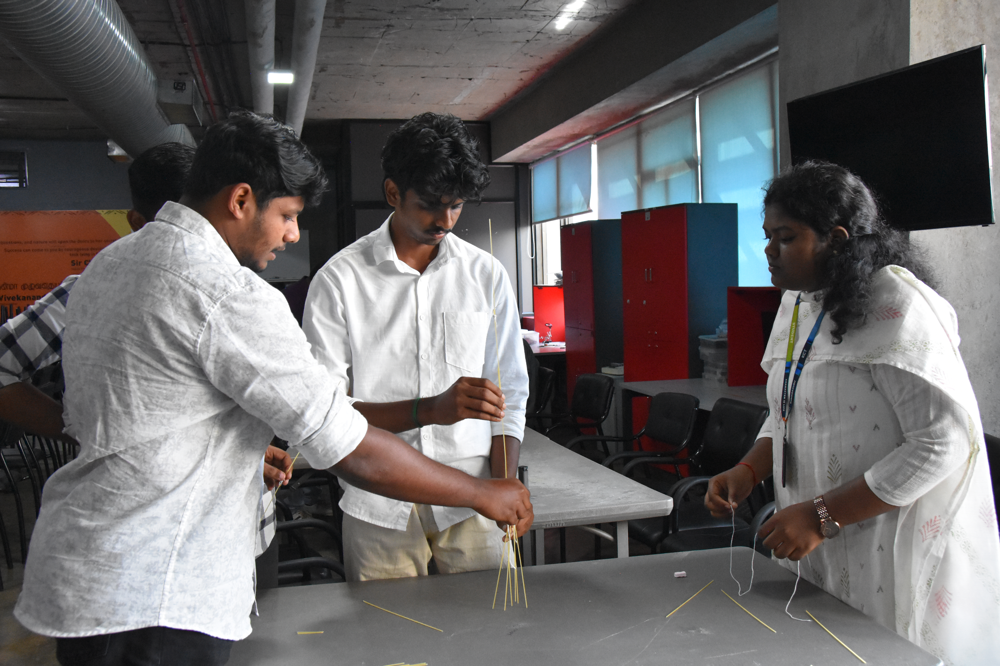
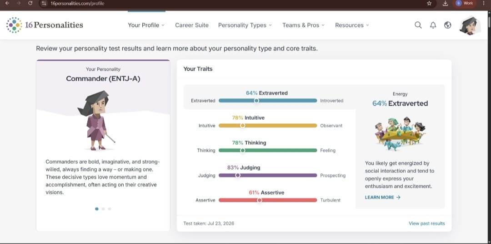
Key Learnings & Takeaways
- Rapid prototyping early (Marshmallow Challenge) tests structural ideas faster than pure planning.
- Researching PARC and Menlo Park expanded my understanding of tech history and foundational innovation hubs.
- Understanding personality traits (Commander ENTJ) optimizes task allocation within teams.
Week 1 — Story Reflection & 5S Electronics Setup
July 2026In Week 1, explored Zen Pencils comics to select an illustration matching my personal values and story. Midway through the week, worked with the electronics team applying the 5S methodology (Sort, Set in order, Shine, Standardize, Sustain) to clean the workspace, organize tools, and sort various Integrated Circuits (ICs).
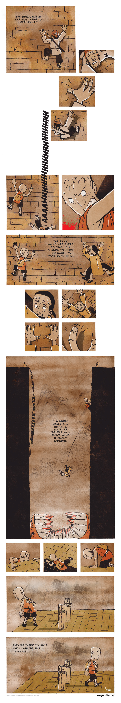

Key Learnings & Takeaways
- Applying 5S rules in the electronics team improves component organization and team productivity.
- Learning to identify and categorize various IC chips for hardware project builds.
Week 2 — Algorithmic Logic, Computational Thinking & Care Coordinator App
August 2026Week 2 focused on foundational computing concepts, algorithmic logic, and computational problem-solving. We started with real-world step-by-step logic exercises (such as analyzing the algorithm for how to make a dosa) and watched the "Think Like a Coder" series to analyze complex problem formulations. We then transitioned into programming paradigms using visual block logic in Scratch, text-based scripting in Python, and rapid mobile app prototyping in MIT App Inventor.
Project Highlight: Care Coordinator App (MIT App Inventor)
The Problem: When an elderly patient is discharged from the hospital, managing recovery — tracking medications, remembering follow-up appointments, and watching for warning signs — usually falls on family members who are often not physically present, medically trained, or given a structured way to stay organized. Paperwork and verbal instructions lead to missed medications, missed appointments, delayed responses, and caregiver anxiety.
The Solution: Care Coordinator centralizes a patient's post-discharge care plan in an accessible mobile interface. It sends timely reminders for medications and appointments, and provides a direct communication channel to a care coordinator — offering family members a single, reliable point of reference during post-hospital recovery.
Innovation 101: Applied Design Thinking & FIH Framework
Participated in an Innovation 101 session on Applied Design Thinking. We introduced the Forge Innovation Handbook (FIH) to analyze product innovation hypotheses across 5 core pillars: Problem, Constraints & Barriers, Value & Benefits, Solution & Usability, and Price & Target Economics.
Using the FIH tool, we collaborated with the Beta Team to evaluate product hypotheses and studied design thinking case studies including the IDEO Shopping Cart, Airbnb/RedBus founding stories, and a gamified stroke rehab glove prototype.
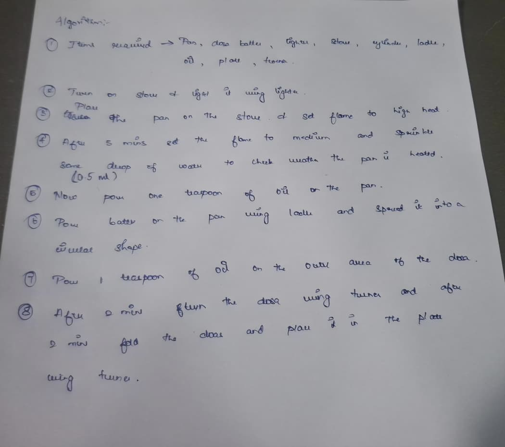
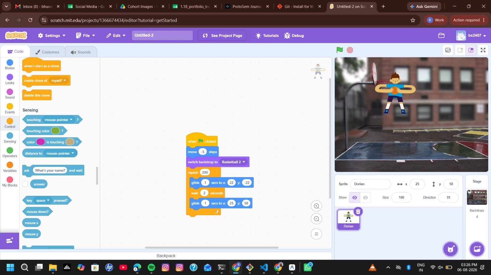
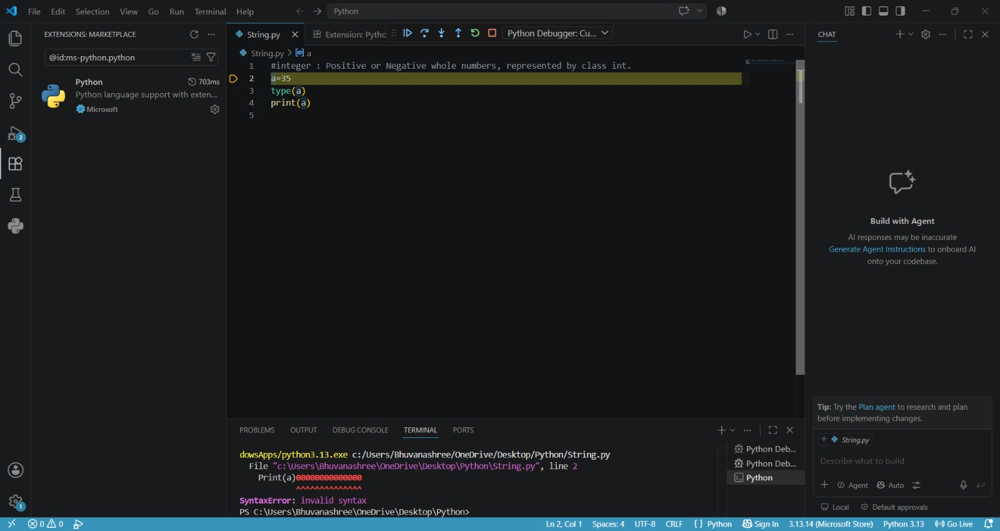
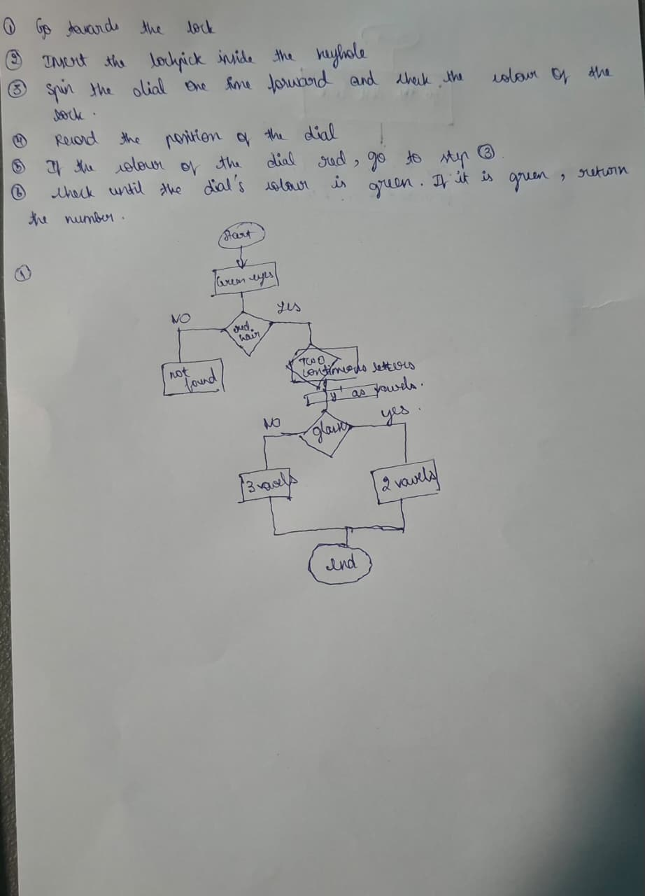
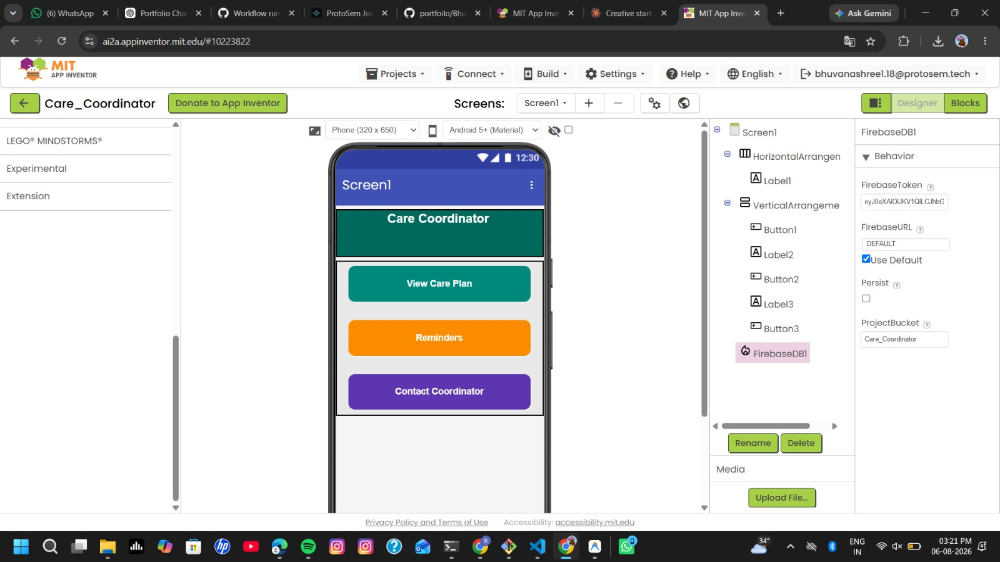

Topics & Competencies Learned
- Algorithmic Structure: Breaking real-life processes into discrete logic steps (e.g. Dosa preparation algorithm).
- Computational Thinking: Logic decomposition via the "Think Like a Coder" framework.
- Applied Design Thinking (FIH): Formulating Product Innovation Hypotheses (Problem, Constraints, Value, Solution, Price).
- Rapid Prototyping Tools: Scratch, Python scripting, and MIT App Inventor.
Week 3 — Electronics Teardown & Autodesk Fusion 360 3D CAD Design
August 2026Week 3 bridged hands-on electrical engineering component testing with 3D CAD modeling and rapid physical prototyping:
Early Week: Electronics Fundamentals, Multimeters & Capacitor Teardown
Attended a dedicated session on electronics fundamentals. Working in a specialized team, we tested active and passive components including Diodes and Resistors, and mastered continuity, voltage, and current measurements using a Multimeter.
Capacitor Teardown: We disassembled and busted open a capacitor to inspect its internal construction — examining the aluminum foil layers, electrolyte solution, and dielectric separator to understand physical charge storage mechanisms.
Explored electrical engineering power systems: Generation, High-Voltage Transmission, Local Distribution, and Grid Infrastructure, connecting component physics to macroscopic power grids.
Mid to End Week: Clay Prototyping, Autodesk Fusion 360 & Paper Rocket CAD
Starting Wednesday, transitioned into 3D CAD modeling using Autodesk Fusion 360:
- Clay Modeling & F1 Car CAD: Conducted a physical engineering clay sculpting exercise to model an aerodynamic F1 Car, then translated the physical model into a 3D CAD model in Autodesk Fusion 360.
- Paper Rocket Activity & Rocket CAD: Participated in an interactive paper rocket launch activity exploring aerodynamics, thrust, and heavy payload flight physics ("Rocket Science"). Afterward, converted the physical paper rocket prototype into a precise 3D CAD model inside Autodesk Fusion 360.


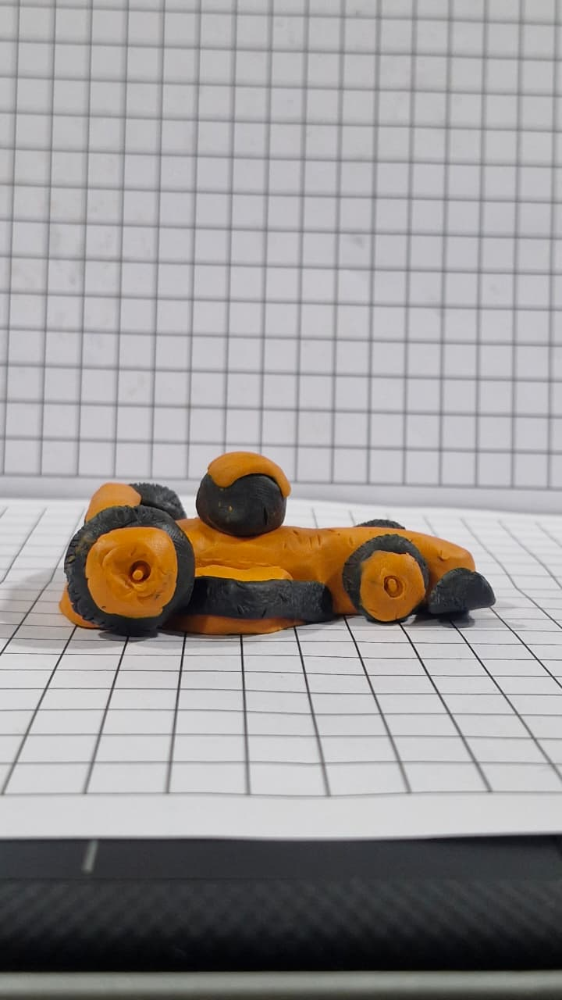
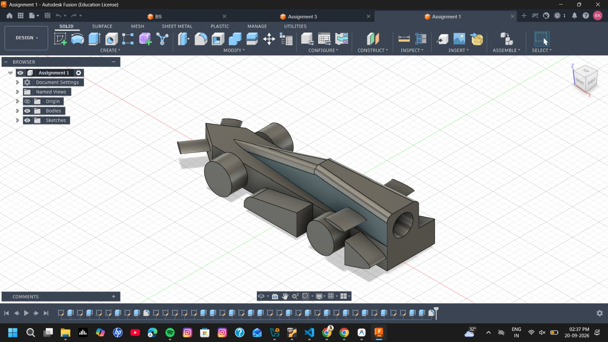
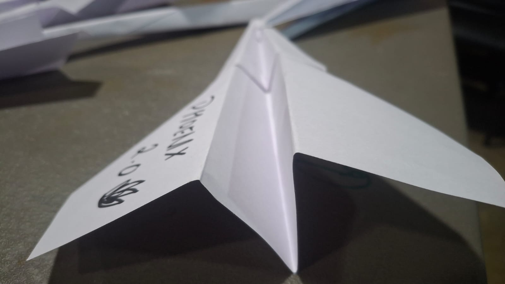


Topics & Competencies Learned
- Electronics & Component Teardown: Multimeter operation, diode/resistor testing, and busting open capacitors to examine dielectric foil layers.
- Power Grids: Generation, High-Voltage Transmission, Local Distribution, and Grid Infrastructure.
- Physical Prototyping: Clay sculpting (F1 Car) and aerodynamic paper rocket fabrication.
- 3D CAD Modeling: Sketching, extruding, revolving, and 3D modeling in Autodesk Fusion 360.
Week 4 — Prototyping, Selection, Fabrication & Discussion
August 2026Week 4 integrated digital 3D product design, physical fabrication, team formation, and critical public discussion:
Activity 1 — Fusion 360 Water Bottle 3D Model
Worked with Autodesk Fusion 360 to design a detailed 3D model of a water bottle. Understood basic 3D modeling techniques, product geometry modeling, and the end-to-end workflow from digital design to 3D printing preparation.
Activity 2 — 3D Printing Activity
Explored the physical additive manufacturing process by 3D printing the water bottle model created in Fusion 360, learning layer-by-layer fabrication principles and slicer settings.
Activity 3 — Visionary Selection
Participated in the Visionary selection process conducted for cohort evaluation, presenting ideas and undergoing candidate evaluation.
Activity 4 — Alpha Team Formation
Following the selection process, participated in the formal segregation and formation of Alpha teams for targeted innovation challenges.
Activity 5 — Laser Cutting Fabrication
Participated in a hands-on laser cutting activity as part of rapid prototyping and fabrication, exploring material cutting speeds, vector paths, and structural assembly.
Activity 6 — Social Media Debate / Group Discussion
Concluded the week with a structured group discussion and debate on the topic: “Social Media – Good Influencer or Bad?”. Strengthened communication skills, public discussion, critical thinking, and evaluating diverse perspectives.


Week 4 Learning Outcome
Gained hands-on competency in 3D CAD modeling (Fusion 360 water bottle), additive manufacturing (3D printing), and subtractive fabrication (laser cutting). Transitioned into Alpha teams through formal selection while developing public communication, debate structure, and critical thinking skills.
Week 5 — UI/UX, Survey, Project Management & Technical Research
August 2026Week 5 progressed from initial UI/UX design into user research, project management principles, client requirements analysis, and engineering calculation:
Activity 1 — Figma UI/UX Fundamentals
Learned core principles of UI/UX design in Figma, including frames, layout grids, visual hierarchy, and component styling.
Activity 2 — Problem Statement Briefing
Received and analyzed the formal project problem statement to define core objectives and user needs.
Activity 3 — User Survey Execution
Designed and conducted target user surveys to gather empirical feedback, understand end-user pain points, and collect quantitative data.
Activity 4 — Survey Response & Problem Analysis
Analyzed survey data responses to refine problem requirements and focus technical feature prioritization.
Activity 5 — Project Management Session (Bosch Expert Guest)
Attended an expert project management workshop conducted by Bhuvan Sundar Surappaiya from Bosch, introducing project planning, milestones, execution frameworks, and resource tracking.
Activity 6 — Client / Startup Requirement Meeting
Participated in a technical client meeting with startup representatives to clarify system specifications and operational requirements.
Activity 7 — Battery Sizing Research & Calculation
Researched battery sizing mathematical equations, evaluating voltage rating, amp-hour (Ah) capacity, depth of discharge, and runtime factors.
Activity 8 — Motor Sizing Research & Load Calculation
Researched motor sizing calculations, torque requirements, RPM specifications, and matching motor load ratings to vehicle application constraints.
Activity 9 — Recommended Technical Course Completion
Completed a recommended technical course suggested by the founder of startup Elikal to deepen technical understanding of electric drive parameters.
Activity 10 — Hub Motor Working Principles Research
Researched hub motor technologies, examining BLDC hub motor construction, thermal performance, gearless vs. geared hubs, and application suitability.
Activity 11 — Market & Commercial Solution Research
Conducted commercial market research on existing hub motor products, vendor specifications, and component availability.


Week 5 Learning Outcome
Progressed seamlessly through Figma UI/UX fundamentals, problem formulation, user survey data analysis, industrial project management principles (Bosch), client requirement translation, mathematical battery and motor sizing, and commercial hub motor market research.
Week 6 — Client Project UI/UX & Computational Embedded Hardware
September 2026Week 6 combined client digital product design in Figma with hands-on embedded electronics, transistor circuits, soldering practice, and ESP32 projects:
Part 1: UI/UX & Client Project Design
Activity 1 — First Alpha Team Client Meeting
Attended our Alpha team's first client meeting to establish formal project requirements, scope boundaries, and deliverables.
Activity 2 — UI/UX Brand Identity & Visual System
Worked on project visual branding for the UI/UX design, establishing color palettes, typography guidelines, and design tokens.
Activity 3 — Problem & Solution Mind Map
Created a comprehensive mind map organizing problem dimensions, feature constraints, user journeys, and technical solution pathways.
Activity 4 — Application Site Map Architecture
Structured a detailed site map defining page navigation hierarchy, screen routing, and information architecture.
Activity 5 — User Interface & Webpage Layout Design
Designed core webpage interfaces based on client specifications and insights gathered from earlier user surveys.
Activity 6 — Application Wireframing in Figma
Constructed low-fidelity and high-fidelity wireframes in Figma, establishing screen components and interaction layouts.
Activity 7 — Interactive Figma Application Prototype
Developed an interactive, clickable application prototype in Figma to demonstrate user flow, navigation transitions, and interface behavior.
Part 2: Computational Hardware & Embedded Electronics
Activity 8 — Electronics & Embedded Systems Fundamentals
Studied foundational concepts of digital electronics, microcontroller pinouts, voltage levels, and embedded system structures.
Activity 9 — NOT Gate / Inverter Circuit Using NPN Transistor
Studied NOT gate inverter logic and built a physical transistor-based inverter circuit using an NPN transistor on a dot board.
Activity 10 — PCB Soldering & Component Desoldering Practice
Learned soldering iron thermal management, component tinning, PCB soldering techniques, and desoldering pump operation while practicing on PCB boards.
Activity 11 — "Target Shooter" ESP32 Interactive Game
Developed an interactive "Target Shooter" hardware game integrating an ESP32 microcontroller, OLED display, analog joystick, and ultrasonic distance sensor.
Activity 12 — Sensor & Actuator Technical Presentation
Selected a PIR Sensor (motion detection sensor) and a Door Strike Actuator (solenoid lock actuator), preparing and delivering a technical presentation on their operating principles, pinout specs, and real-world application scenarios.


Week 6 Learning Outcome
Successfully combined digital UX design (client scoping, branding, mind mapping, wireframing, and Figma interactive prototyping) with hardware engineering (transistor inverter logic on dot boards, PCB soldering, ESP32 OLED game building, and PIR sensor/door strike actuator technical presentations).
Week 7 — Arduino Embedded Systems & IoT Cloud Web Applications
September 2026Week 7 covered microcontroller programming, firmware architectures, IoT cloud platforms, and building full-stack web applications with Firebase Authentication and Hosting:
Part 1: Arduino & Embedded Systems Fundamentals
Activity 1 — Arduino IDE Development Workflow
Learned the Arduino IDE toolchain, board manager configuration, sketch compilation, and serial communication monitor debugging.
Activity 2 — Arduino Pin Mapping & Peripheral Interfacing
Studied digital I/O pins, analog input pins, PWM outputs, and hardware interfacing rules for external sensors and actuators.
Activity 3 — Embedded Simulators & Emulators
Explored virtual hardware simulation tools and emulators used to test microcontroller code prior to physical hardware deployment.
Activity 4 — Five-Block Embedded System Architecture
Learned the five-block embedded architecture framework (Inputs, Processing Core, Memory, Outputs, Power/Communication).
Activity 5 — Processor Polling Concepts
Studied polling execution loops in embedded systems, analyzing CPU cycles, status checking, and input state evaluation.
Activity 6 — C & Embedded C Fundamentals
Learned Embedded C fundamentals, memory management, bitwise operations, register configuration, and header file declarations.
Activity 7 — Digital NOT Gate / Inverter Logic
Continued exploring digital logic inverter circuits, signal inversion, and pull-up/pull-down resistor configurations.
Part 2: IoT Platforms & Firebase Web Application
Activity 8 — Internet of Things (IoT) Session
Learned IoT system fundamentals: connected sensor networks, gateway communication protocols, cloud dashboards, and remote device control.
Activity 9 — Adafruit Cloud Dashboard & Hardware Bulb Control
Configured Adafruit IO MQTT feeds/dashboards and wrote Arduino C code to control hardware bulb ON/OFF switching remotely over Wi-Fi.
Activity 10 — Beginner Firebase Web Application & Hosting Deployment
Created a beginner-friendly full-stack web application using the modular Firebase SDK. Built a responsive landing page, implemented user registration/login using Firebase Email/Password Authentication, protected user dashboards using onAuthStateChanged() listener, handled logout via signOut(), and configured Firebase Hosting CLI for web deployment.
Activity 11 — ESP32 Local Web Server LED/Bulb Control
Programmed an ESP32 microcontroller to act as an HTTP local web server, serving an embedded web interface to toggle connected LEDs and relay-driven bulbs in real time.


Week 7 Learning Outcome
Mastered embedded firmware development on Arduino IDE, 5-block architecture, polling loops, and Embedded C, progressing into IoT cloud dashboards (Adafruit), full-stack web applications with Firebase Authentication & Hosting, and local HTTP web server control on ESP32 microcontrollers.
Week 8
Week 8 progress placeholder.
Week 9
Week 9 progress placeholder.
Week 10
Week 10 progress placeholder.
Week 11
Week 11 progress placeholder.
Week 12
Week 12 progress placeholder.
Week 13
Week 13 progress placeholder.
Week 14
Week 14 progress placeholder.
Week 15
Week 15 progress placeholder.
Week 16
Week 16 progress placeholder.
Week 17
Week 17 progress placeholder.
Week 18
Week 18 progress placeholder.
Week 19
Week 19 progress placeholder.
Week 20 — Final Demo
Week 20 final demo and project completion placeholder.
ProtoSem Overall Applied Learning Journey
A hands-on engineering progression demonstrating how activities moved from initial design and physical fabrication into user research, client scoping, digital hardware circuits, embedded microcontrollers, web applications, and cloud IoT control:
Fusion 360 water bottle modeling ➔ 3D printing ➔ laser cutting fabrication ➔ Alpha team selection ➔ social media debate & public communication.
Figma UI/UX ➔ problem statement ➔ user surveys ➔ Bosch project management session ➔ startup meeting ➔ battery & motor sizing calculations ➔ hub motor market research.
Client requirements ➔ UI/UX branding ➔ mind mapping & site maps ➔ Figma wireframes & prototypes ➔ NPN transistor NOT gate circuit ➔ PCB soldering ➔ ESP32 Target Shooter game ➔ PIR sensor & door strike actuator presentation.
Arduino IDE ➔ pin mapping ➔ 5-block architecture & polling ➔ Embedded C ➔ IoT basics ➔ Adafruit cloud bulb control ➔ beginner Firebase web application (Auth & Hosting) ➔ ESP32 local HTTP web server.